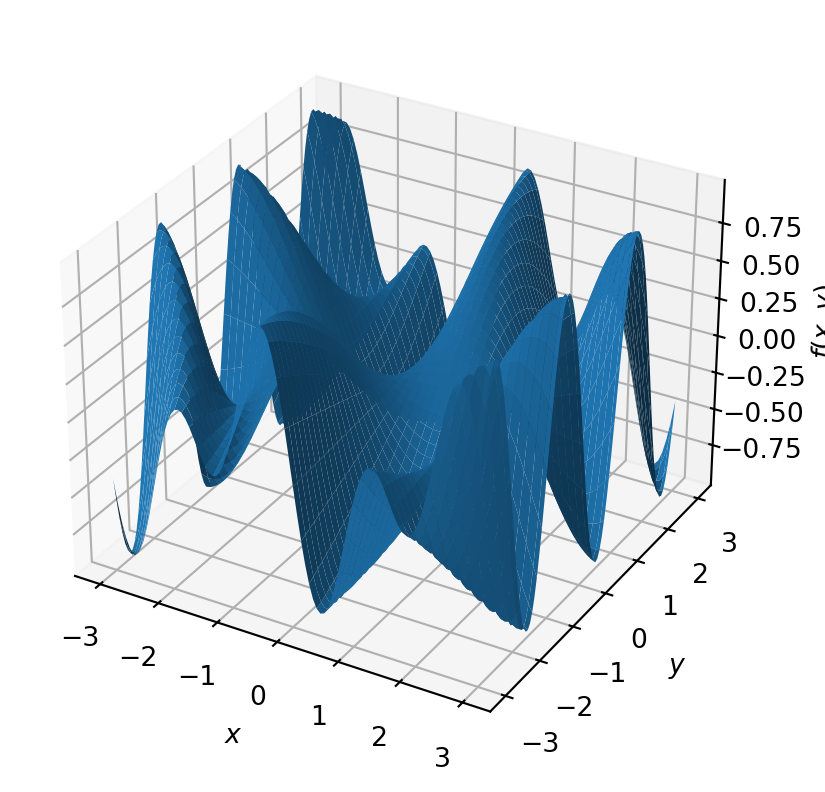
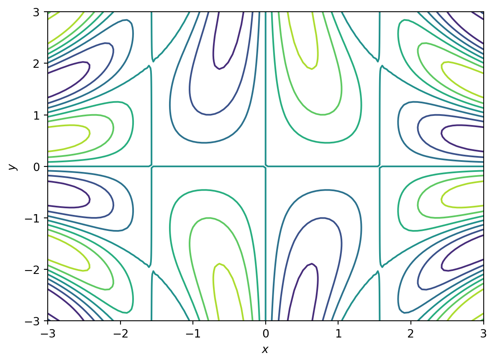

The assessment of your project will requires you develop:
A common theme with the different assessment points is the need for a narrative around your project:
Once you have settled on a narrative, the different assessment points can be thought of as variations on the presentation of your project narrative.
Define a narrative for your project:
A key principle of good communication is to know your audience.
If you pitch at too high a level (e.g. assuming that your audience know more than they actually do), the audience will likely be confused and unable to follow your reasoning.
If you pitch at too low a level (e.g. by explaining concepts that your audience is already familiar with) they will likely be bored/feel condescended etc.
At all points of your assessment: assume that you are communicating with your peers, i.e. Level 4/5 of a undergraduate mathematics degree. This means that you should not assume that the audience have specific knowledge of the details/background of your project.
Practice pitching your project at different target audiences:
You will almost certainly use mathematical notation in your assessment.
Are equations presented accurately? Are mathematical objects accurately defined? Has sufficient background detail been presented so that the arguments can be reasonably followed?
To typeset formulae is actually quite difficult. Mathematics uses a variety of symbols and several different alphabets: Roman, Greek, Hebrew are the most common. In addition formulae are often more similar to graphics than to text. There are numerators and denominators which in turn can have fractions etc., e.g.: \[ f:= \frac{1}{1+\frac{1}{1+\frac{1}{1+x}}}. \]
To make this formula look good requires either an advanced typesetting program or a lot of effort. Most common typesetting programmes come with some sort of equation editor, but very few can handle such a problem. The most powerful mathematical typesetting program, which is also the format used for almost all mathematical literature is LaTeX. We will learn about LaTeX later.
As with grammar, for a language there exist also certain conventions about how to write formulae. Here is a (far from exhaustive) list of the most import conventions:
Treat the formula like text. If the formula is at the end of a sentence there has to be a full stop at the end of the formula. If another formula follows use a comma or semicolon. This is how we count \[ 1 + 0 = 1, 1 + 1 = 2. \]
use Roman (typically lower case) letters in italic style for all variables: \(x\), \(y\), \(z\), \(a\), \(b\), \(c\), both if we refer to them in the text as well as in formulae. Note difference between \(x\) and x.
use Greek letters for angles, and e.g. differential forms;
typeset vectors in bold, \(\mathbf{a}\), or using an arrow, \(\overrightarrow{a}\);
typeset functions in roman, \(\sin(x)\) rather than \(sin(x)\);
typeset matrices using capital roman letters, e.g. \(M\);
represent number systems and also certain vector spaces in a style where certain lines are double: \(\mathbb{R}\), \(\mathbb{Q}\), \(\mathbb{C}\), …;
use curly brackets for sets, e.g. \(\{1, 2, 3\} = \{2, 1, 3\}\), and regular brackets for an ordered list \((1, 2, 3) \neq (2, 1, 3)\);
denote a range by three dots: \(i = 1, 2, . . . , n,\) (no bracket required);
use brackets only where necessary, note that multiplication/division takes precedence over addition/subtraction; e.g \[ a + (b · c) \] does not need the brackets, but \[ (a + b) · c \] does. Any fraction replaces a bracket, so \(\frac{5}{a+b}\) does not need the brackets.
use a separate line for any formula that uses more than one line or complicated formula. Don’t write \(x=\frac{-b\pm\sqrt{b^2-4ac}}{2a}\) in line. Instead write \[ x=\frac{-b\pm\sqrt{b^2-4ac}}{2a}. \]
Common mistakes are (in addition to violating the above conventions):
A formula is often the best and most concise way to communicate a relation or function to a mathematically trained audience. However, there are many cases where even a mathematician might have difficulty understanding (e.g. in the short time available in a presentation) what a function represents. For functions of one and two variables there is always the option to show a plot of the function. Here is an example of a function in two variables: \[ f (x, y) = \cos(x) \sin(xy). \tag{2.1}\] Although this is a comparatively simple function it takes some time to figure out what properties the function has, that is for instance:
To explain the behaviour of such a function, a plot will help! But which plot? For example, we could use a surface or contour plot (see Figure 2.1). The advantage of a contour plot is that it is often easier to see the locations of maxima and minima but it is not so easy to see how high the extrema are.
A good rule of thumb is: if figures and tables are removed from the text, does the text still read coherently? i.e. the figure is helping the reader to understant a point that is made within the text. It is not replacing the need for text.
Other types of plots are useful for different purposes:
Some rules -of-thumb:
Schematic diagrams are a useful way to help to try and introduce a new concept/summarise a finding.
There are many ways to generate schematic diagrams (e.g. generating in software such as Photoshop or Illustrator and saving as an image).
Alternatively Quarto (?sec-quartoint) ) provides an interface to a number of graph-based tools that generate schematic diagrams, e.g.
flowchart LR
A[Hard edge] --> B(Round edge)
B --> C{Decision}
C --> D[Result one]
C --> E[Result two]
All content in your report must be either original or attributed, via references, to the originating author(s). The majority of the content of a report should be in the author’s original words. It should be the author’s original logical argument, with citations used to document and justify key assertions and facts.
Passing off someone else’s work as your own is plagiarism. It undermines the integrity of science, and has serious consequences for the authors as well. (e.g., failing grades, expulsion from a degree program, loss of an academic position, being shunned by the scientific community, etc.)
Some tips:
You should try and try and cite primary sources (e.g. research papers or textbooks) as these have permanent bibliographic identifiers (dois).
Wikipedia is an excellent resource for learning new topics. However, it is not an acceptable source for citation in a report or publication as:
A word-for-word quotation should be indicated with quotation symbols. Such as: The whatever effect causes “extremely aggressive phenotypes” to dominate (Smith et al. 2010). Extensive quotes of more than one sentence should generally be set apart as a separate paragraph.
limit quotations to no more than 1-3 sentences. Instead, one should paraphrase and/or summarise cited work. Hence, quotations should be kept to a minimum.
You must take great care when quoting or paraphrasing text to cite the original source.
Large language models (LLMs), such as ChatGPT, Dall-E, are being used to generate increasingly complex outputs (e.g. images, text). AI is also increasingly used in the development of codes (e.g. CodePilot).
LLMs use statistical patterns in datasets upon which they have been trained to generate responses to natural language queries. To the untrained eye, the output can seem very convincing and, depending on the query, it can be accurate. But the output can also be completely incorrect.
Using generative AI materials without attributing the source is a form of plagiarism. Hence if you use generative AI in your project it must be clearly declared in your Use of AI statement (see template project). You can find the University policy on this topic here.
The referencing styles are still developing their guidance on how to reference GAI tools such as ChatGPT. As content generated by GAI is non-recoverable, it cannot be retrieved or linked to in the way that other resources that may be referenced in your work. University policy recommends that AI-generated content should be cited as a personal communication as an in-text citation.
Plagiarism is the unacknowledged use of another’s work as if it were one’s own. Examples are:
NB: if you wish to reference your own work, it is important to acknowledge yourself as the source and provide the appropriate reference.
The overall structure of a report is (generally) as follows:
Title page: This should give the title of the report, the author list, and the date.
Abstract: provide a short synopsis (~10 sentence) of the project.
Introduction: This introduces the overall context and importance of the problem you are addressing. It should give:
Actual content: There should be one or more sections that logically progress your argument and analysis. For example:
Discussion and Conclusions: Wrap up with a summary of your major results, the significance of your conclusions (including any additional analysis of the results to lay out this significance), and an outlook what else could be done/ or where improvements are required.
References: This section contains the full list of publications that you cited in your report.
Appendices
A template project report is available via the MA40001Resources github repository.
At the end of Semester 1 you will be asked to give an approx. 10 minute verbal presentation of your project. More information will be provided in Weeks 7-10.
A template presentation is available via the MA40001Resources github repository.